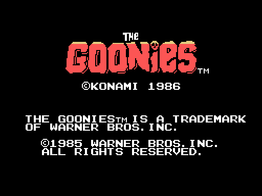
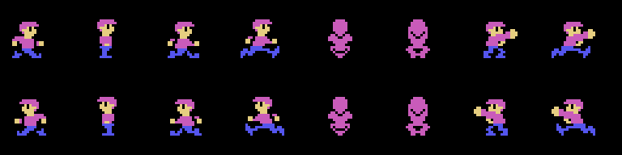
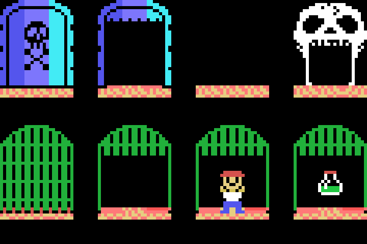
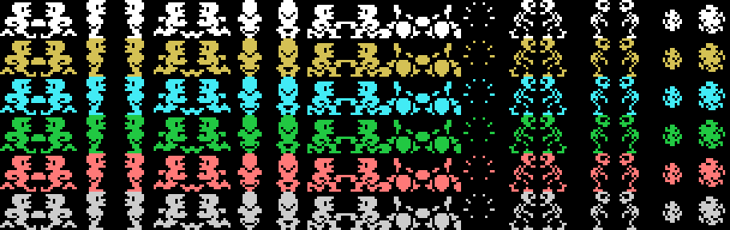
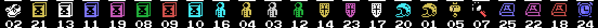

The title screen, drawn from the ROM. The caption reads © KONAMI 1986, with the 1985 Warner Bros. trademark notice below.
Mikey goes down into the Astoria caves to rescue the other seven Goonies and find One-Eyed Willy's treasure. There are twenty-five levels across five rounds of five, and each level is four rooms of 32x20 tiles.
Get your friends out of their cages. Each one freed bumps the counter at (0xE130), and with seven the skull door opens — the one that lets you through to the next level. The key is (0xE121).
You move between rooms by walking off the sides. The link is not geometric: it is two twin tables of 19 rows by 4 columns (0x52DB and 0x5327), and which one gets consulted depends on which side you leave by — the left one if the column drops below 0x15, the right one if it reaches 0xC0. The row is picked by the level's room layout, one of the 25 bytes at 0x9D67.

Six states — walk, jump, ladder, fall, kick and mid-air kick — and sixteen poses. Each pose is three overlapping 16x16 sprites, assembled by 0x586A from a nine-byte entry: y offset, x offset and pattern number, three times over.
Speed carries a fraction: 0x0110 normally — one and one sixteenth pixels per frame — and 0x0180 with item 0, which is one and a half.
You climb and descend them, and they are not decoration: tile 0x41 is the foot of a rope and you go up by pressing up; tile 0x53 is the head, the one hanging from a platform, and you go down by pressing down (0x66E4). The creatures use exactly the same ones.

The skull door — shut and open — the door to the next level, and the four cages: shut, open, with the friend inside and with the item inside.
Each level brings two lists. The level list sits right behind the eighty bytes of the map and spreads things across the four rooms; the four room lists hang off a per-level table. Both are read the same way (0x8D64 and 0x8E73): a byte 0xF0+type opens a run, its records follow, and 0xFF closes.
| type | LEVEL list | ROOM list |
|---|---|---|
| 0 | rising column | water jet |
| 1 | stalactite | boulder |
| 2 | the chaser | flame |
| 3 | the door to the next level | pipe leak |
| 4 | blinking pickup | the spot that drips |
| 5 | cage | skull |
| 6 | hidden item | bat |
| 7 | the skull door | the many-legged creature |
0x7A9E runs through the seven damaging hazards and leaves the bit in (ix+00Ah), which is also where the player's colour comes from: water jet 0x01, stalactite 0x02, drip 0x04, flame 0x08, column 0x10, leak 0x20 and boulder 0x40.

The single-square sprite patterns, in the six colours the game uses. The colour is not in the drawing: it lives in the attribute.

The twenty-three items, with the level each appears in underneath.
Twenty-three items, and the bottom row shows up to twelve 2x2 icons. They live in three places: 0xE176 one bit per item, 0xE180 which slot each occupies in the row, and the table at 0x6F68 its icon.
And they are not trophies: they are shields with charges. The list at 0x7D9B says which item stops which hazard; carrying it, the hit spends a charge of (0xE150+item) instead of taking energy, and when the charges run out the item is lost.
The table at 0x5576 says which level each is in: twenty-three distinct values between 0 and 24, and 5 and 14 are exactly the ones missing. Levels 6 and 15 are the only two with no item.
At the end of each round, 0x53A7 shows you, under the KEYWORD caption, the name of the round you have just cleared. That name is the password, because they are the same bytes: MR SLOTH, GOON DOCKS, DOUBLOON, ONE EYED WILLY and GOONIES. The whole story is in Findings.
They are drawn one by one in The 25 levels.